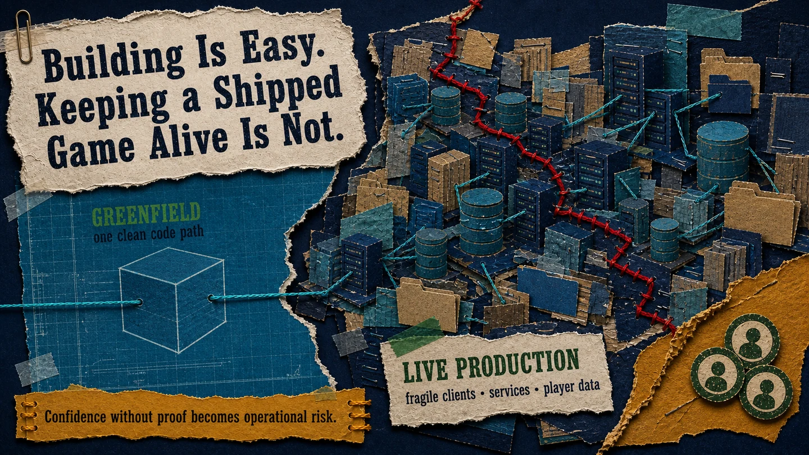
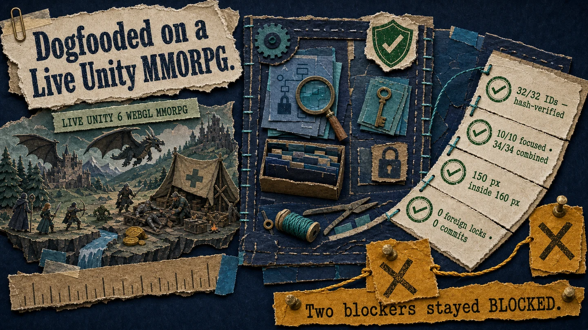

01 / coreengine-agnostic
Studio Core
Intake, safety, evidence, collaboration, design, and governance for every project.
15 workflowsMOStudio Kit gives Codex and Hermes an evidence-first operating layer for fragile, live, revenue-bearing game projects — from Unity clients and C++ servers to Lua contracts, player saves, release gates, and liveops incidents.
Evidence over confidence · BLOCKED is never PASS
Once players and revenue depend on the project, a change can cross fragile clients, services, generated assets, databases, and player data. The kit treats that system as something to operate—not a blank canvas.

The router starts with the smallest matching workflow. Packs give teams a clean way to install only the surface they need.
Intake, safety, evidence, collaboration, design, and governance for every project.
15 workflowsOffline debugging, UI rendering, localization, asset integrity, batch builds, and scaffolding.
6 workflowsServices, MySQL, protocol contracts, crash triage, authority review, and save migrations.
9 workflowsPlaytests, performance, economy, balance, release, stores, incidents, and telemetry.
8 workflowsProduction planning, dependency risk, QA strategy, compatibility, and capacity verification.
5 workflowsLevel, narrative, art, animation, and audio production review workflows.
7 workflowsProduct experimentation and governed live content rollout workflows.
2 workflowsNo slash commands or skill names required. Search by the failure, system, or gate you need to handle.
Every meaningful claim carries a label. The kit makes it structurally difficult for an agent to turn missing evidence into a confident success report.
An observed command, test, build, primary source, or artifact supports the claim.
True for a named commit, version, configuration, or environment snapshot.
A hypothesis or forecast that still needs evidence before it becomes a result.
A runner, dependency, permission, live project, or required proof is unavailable.
The catalog is not a checklist of 49 skills. Start with a desired outcome; the router selects a lane, then safety and evidence gates control how far the agent can go.
You describe the job. The kit composes only the skills needed for that path.
“Client can't enter offline mode. Fix it.”
“Turn this mechanic into implementation work.”
“Set this existing game repo up for agent work.”
“Is this RC safe to ship?” / “Players found a dupe.”
Human checkpoints remain in the loop. The router can choose a workflow automatically, but high-risk database, service-control, credential, destructive, and publish actions cannot cross the approval gate on their own.

Two skill-routed runs shipped three fixes through their owning pipelines, preserved unrelated work, and kept two verification gaps honestly BLOCKED.
Choose your primary runtime, install MOStudio Kit from the stable GameStudio-CodexKIT repository, and describe the studio problem directly.
npx skills add hoatv2211/GameStudio-CodexKIT -a hermes-agent -g -ycodex plugin marketplace add hoatv2211/GameStudio-CodexKITAudit this game project and route the work to the right studio skills.